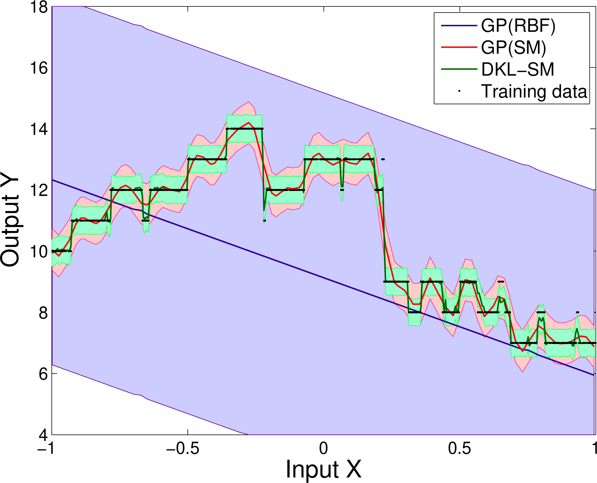

MacKay’s Question (1998)
“How can Gaussian processes possibly replace neural networks? Have we thrown the baby out with the bathwater?”
Key Insight
Neural networks can automatically discover meaningful representations in high-dimensional data
Key Insight
GPs with expressive kernels can discover rich structure without human intervention
Core Concept
Transform the inputs of a base kernel with a deep architecture to create scalable expressive closed-form kernels
\[k(\mathbf{x}_i, \mathbf{x}_j | \boldsymbol{\theta}) \rightarrow k(g(\mathbf{x}_i, \mathbf{w}), g(\mathbf{x}_j, \mathbf{w}) | \boldsymbol{\theta}, \mathbf{w})\]
Where:
Deep Kernel Learning
Infinite Hidden Units
The GP with base kernel provides an infinite number of basis functions in the final layer
Maximize the marginal likelihood:
\[\log p(\mathbf{y} | \boldsymbol{\gamma}, X) \propto -[\mathbf{y}^{\top}(K_{\boldsymbol{\gamma}}+\sigma^2 I)^{-1}\mathbf{y} + \log|K_{\boldsymbol{\gamma}} + \sigma^2 I|]\]
Gradients via chain rule: \[\frac{\partial \mathcal{L}}{\partial \mathbf{w}} = \frac{\partial \mathcal{L}}{\partial K_{\boldsymbol{\gamma}}} \frac{\partial K_{\boldsymbol{\gamma}}}{\partial g(\mathbf{x},\mathbf{w})} \frac{\partial g(\mathbf{x},\mathbf{w})}{\partial \mathbf{w}}\]
\[k_{\text{RBF}}(\mathbf{x}, \mathbf{x}') = \exp\left(-\frac{1}{2} \frac{\|\mathbf{x}-\mathbf{x}'\|^2}{\ell^2}\right)\]
Properties:
\[k_{\text{SM}}(\mathbf{x}, \mathbf{x}' | \boldsymbol{\theta}) = \sum_{q=1}^Q a_q \frac{|\Sigma_q|^{1/2}}{(2\pi)^{D/2}} \exp\left(-\frac{1}{2} \|\Sigma_q^{1/2} (\mathbf{x}-\mathbf{x}')\|^2\right) \cos\langle \mathbf{x}-\mathbf{x}', 2\pi \boldsymbol{\mu}_q \rangle\]
Properties:
The Scalability Challenge
Standard GPs: \(\mathcal{O}(n^3)\) complexity Goal: Linear scaling \(\mathcal{O}(n)\)
\[K_{\boldsymbol{\gamma}} \approx M K^{\text{deep}}_{U,U} M^{\top} := K_{\text{KISS}}\]
Where:
Key Finding
Deep Kernel Learning consistently outperforms both: - Standalone deep neural networks - Gaussian processes with expressive kernels
Visualization
The learned metric correlates faces with similar rotation angles, overcoming Euclidean distance limitations
Key Benefit
Scalability enables learning from large datasets where expressive representations matter most
Challenge
Recover step function with sharp discontinuities
DKL provides posterior predictive distributions useful for:

Deep Kernel Learning Successfully Combines:
Scalable, expressive, and principled machine learning approach that consistently outperforms both paradigms alone